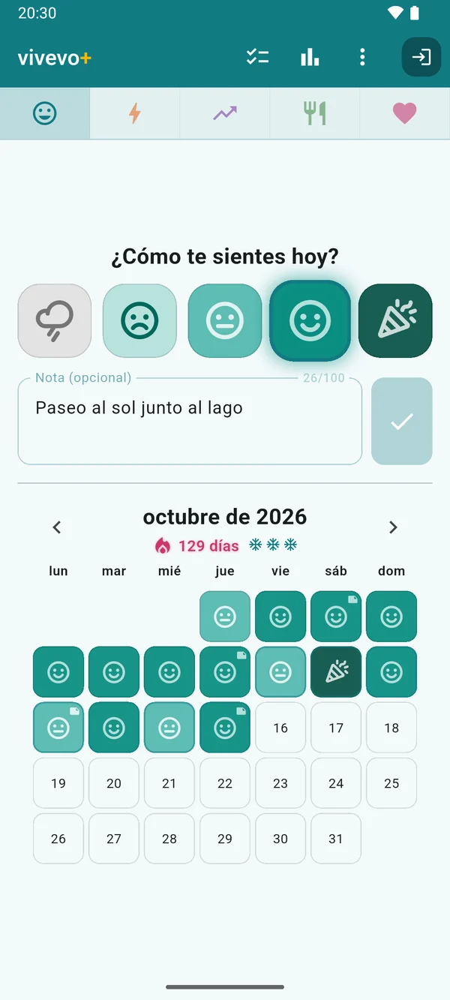
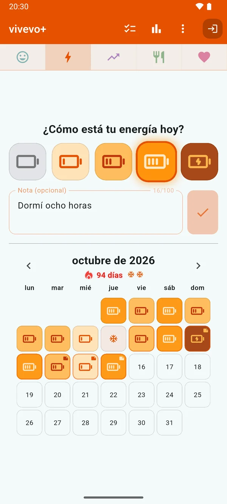
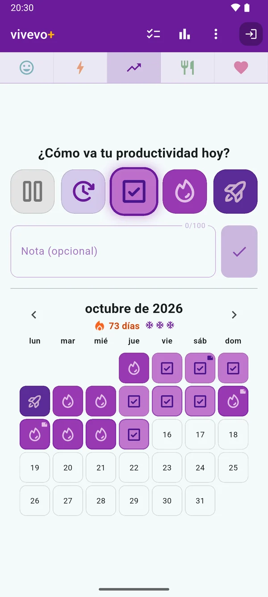
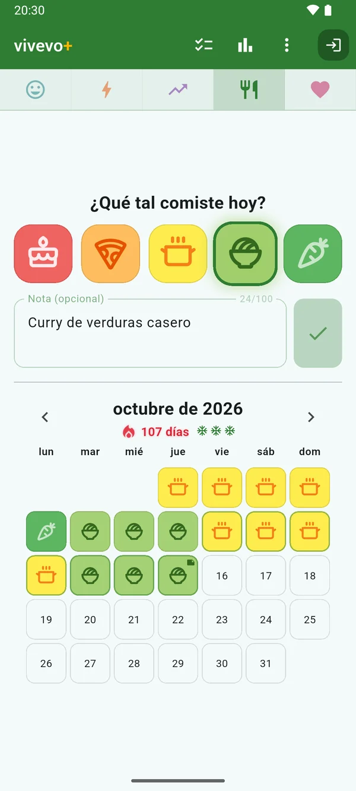
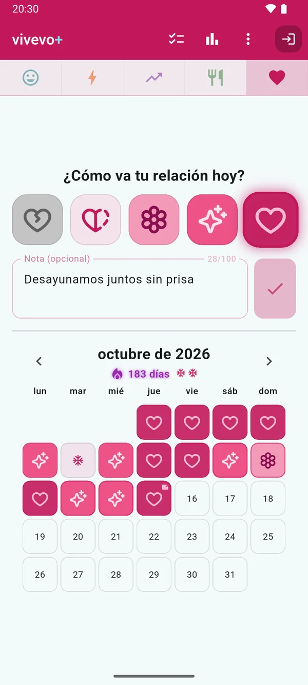
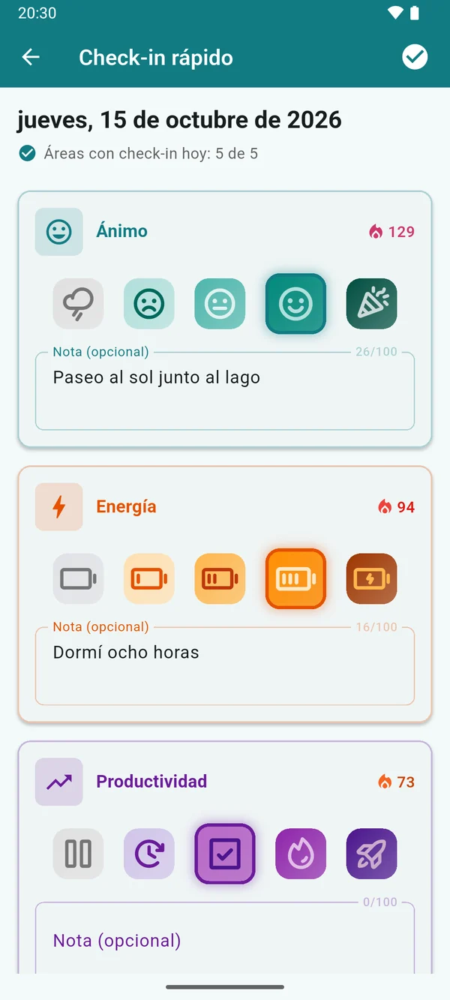
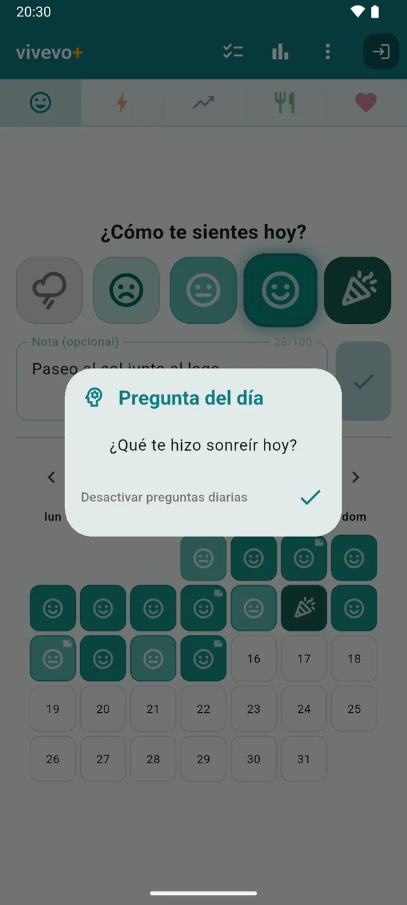
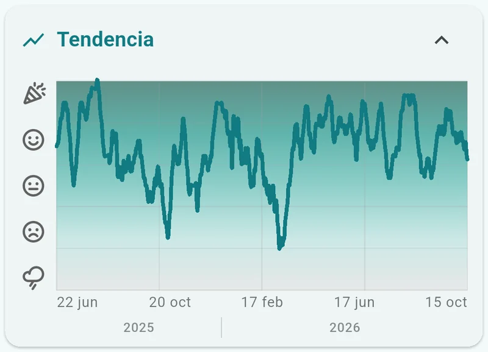
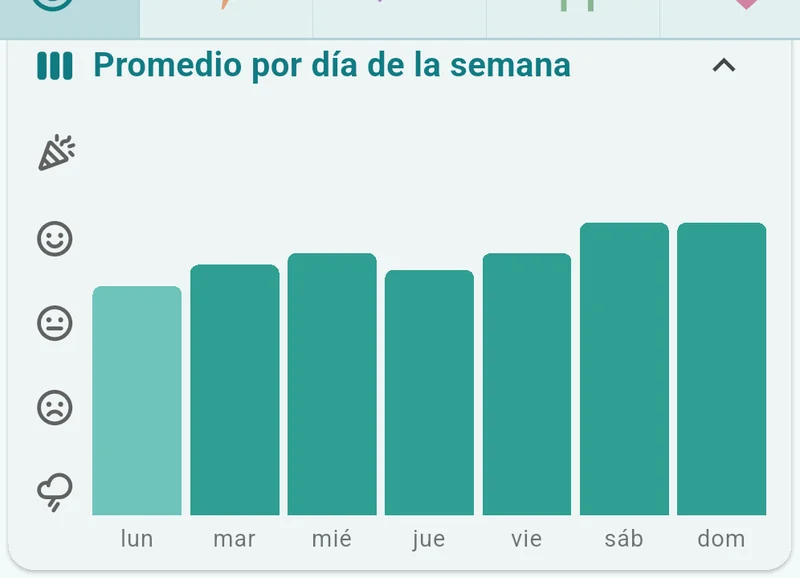
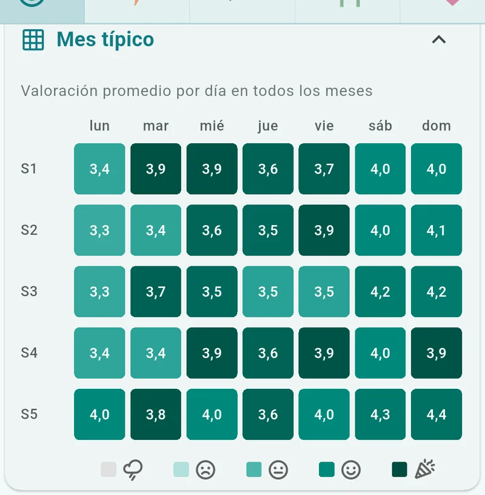

¿Cómo estás?
vivevo es un diario de un solo toque para las cinco áreas que marcan tu día: ánimo, energía, productividad, alimentación y relación.
Cinco segundos de sinceridad al día.
Disponible en Google PlayGratis · Android · Sin anuncios · Español, English, Deutsch y Français

Una respuesta sincera al día.
Sin números que teclear ni redacciones que escribir. Eliges la imagen que encaja con tu día, y listo.
-
PASO 1
Responde una pregunta
¿Cómo fue tu día? Toca una de las cinco imágenes. Añade una nota breve si el día lo merece.
-
PASO 2
Mira cómo el mes se llena de color
Cada día se convierte en una casilla de color. Las rachas crecen, y perdonan si algún día se te pasa.
-
PASO 3
Descubre los patrones
Unas semanas después, ya ves el panorama: qué impulsa tus días y qué les resta energía.
¿Por qué un solo toque?
Porque lo difícil es el hábito. Un check-in de cinco segundos resiste semanas ajetreadas, días de enfermedad y vacaciones, y una valoración sincera cada día vale más que una entrada detallada una vez al mes. Los patrones solo aparecen cuando los datos siguen llegando.
Cuando tienes más que contar, para eso está la nota. Cuando no, un toque es una entrada completa.
Cinco pétalos, cinco áreas.
Fíjate bien en el logo: sus cinco pétalos son las cinco cosas que registra vivevo. Cada área tiene su propia escala de cinco niveles, con imágenes en lugar de números.

-
Ánimo
nube de lluvia → confeti
-
Energía
batería vacía → cargando
-
Productividad
en pausa → cohete despegando
-
Alimentación
pastel → zanahoria
-
Relación
corazón roto → corazón entero
Ánimo 
Energía 
Productividad 
Alimentación 
Relación
Registra un área o las cinco: cada una tiene su propia racha, su calendario y sus gráficos, y toda la app adopta el color del área en la que estás.
Una racha que perdona.
La constancia debería animarte, no parecer frágil. Todo en vivevo está pensado para que sigas adelante, sin presión.
La llama no deja de evolucionar.
La mayoría de los contadores de rachas son solo un número. La llama de vivevo sigue cambiando de color durante quinientos días, y empieza a brillar a partir del día 30.
Y un día aún sin valorar nunca termina tu racha: primero dejamos que el día llegue a su fin.
-
Protectores de racha automáticos
¿Se te pasó un día? vivevo aplica un protector por ti, sin que tengas que tocar ningún botón. Los protectores se renuevan cada mes.
-
Recordatorios con buenos modales
Un pequeño empujón al día, solo si aún no tienes check-in, y sigue ahí con discreción si te alejas un tiempo.
-
Pregunta del día
Una pequeña reflexión que sabe qué hora es: “¿Qué te hará sonreír hoy?” se convierte por la tarde en “¿Qué te hizo sonreír hoy?”.
-
Check-in rápido
Las cinco áreas en una sola pantalla, directamente desde la notificación del recordatorio.

Check-in rápidoTodas las áreas que registras, en una sola pantalla. 
Pregunta del díaFormulada según la hora del día.
Patrones que de verdad se ven.
Seis gráficos, cualquier periodo y una pregunta: ¿qué mueve de verdad tus días?



Tus datos, tus reglas
vivevo funciona por completo sin cuenta: todo se queda en tu dispositivo, incluidas las rachas y los protectores. Inicia sesión con Google y se guarda una copia de seguridad de tus entradas, que se sincronizan en tiempo real entre tus dispositivos; los cambios hechos sin conexión esperan en cola y se combinan con seguridad.
Tus datos siguen siendo tuyos: expórtalos todos en CSV o elimina tu cuenta y todos tus datos desde la propia app, cuando quieras.
vivevo+: las cinco áreas a la vez, todo tu historial, tres protectores de racha al mes, notas más largas y exportación CSV. Con pago mensual o anual.
La app gratuita no es una demo: un área a la vez, 28 días de historial y un protector al mes, gratis para siempre.
¿Cómo estás?
Descúbrelo cada día.
Disponible en Google Play
Gratis · Android · Sin anuncios · Español, English, Deutsch y Français